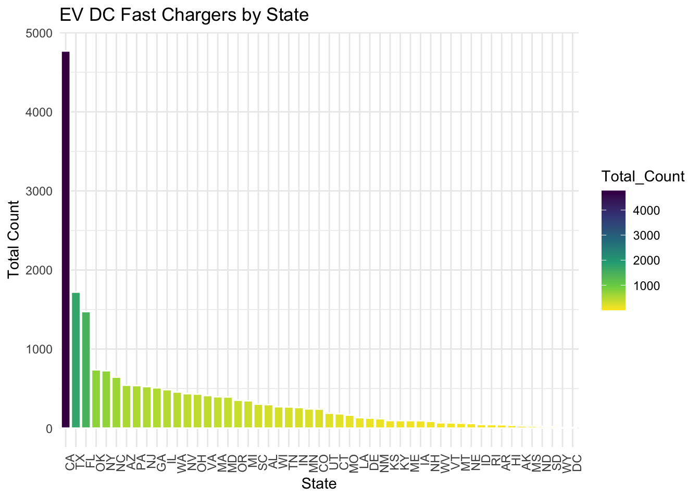
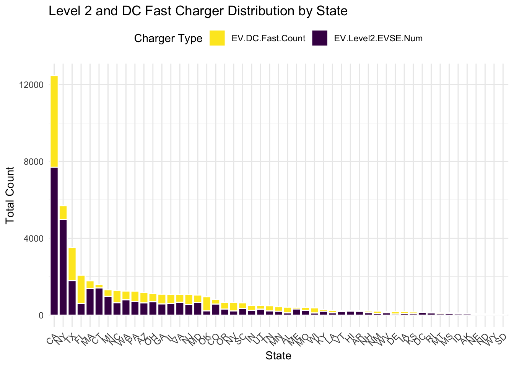
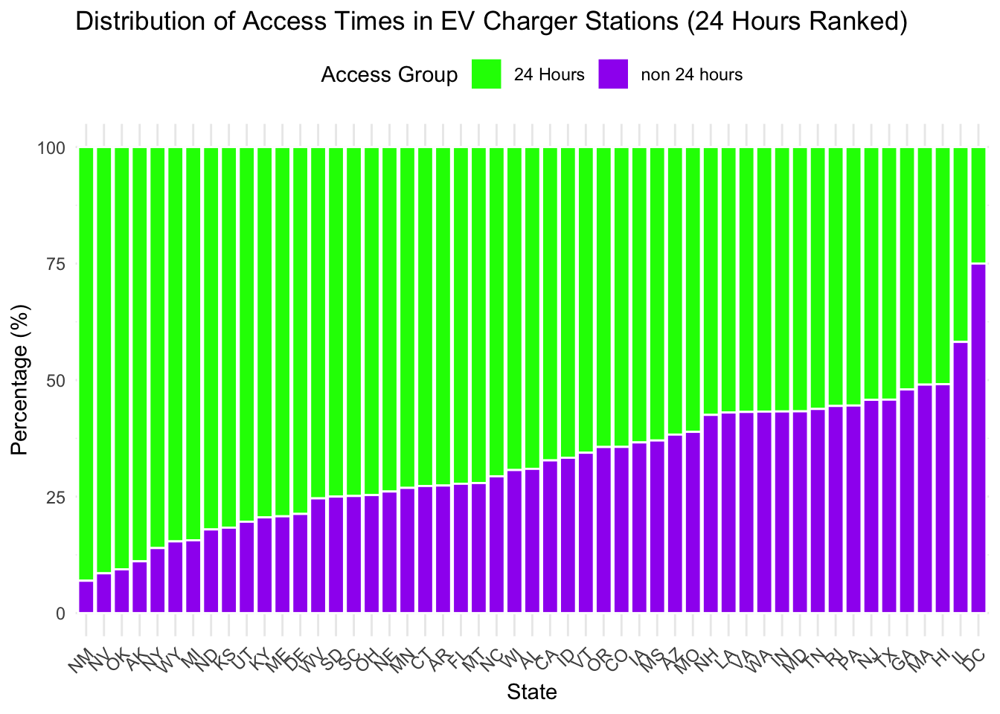
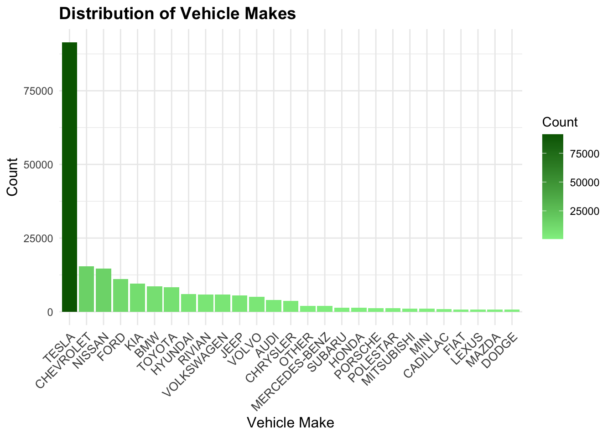

Code
library(dplyr)
library(readr)
library(ggplot2)
library(tidyverse)
library(scales)Here is the packages we use
library(dplyr)
library(readr)
library(ggplot2)
library(tidyverse)
library(scales)Here is the dataset we call
fuel_prices_average <- read.csv("data/fuel_prices_average.csv",stringsAsFactors = FALSE)
chargStat_selected <- read.csv("data/chargStat_selected.csv", stringsAsFactors = FALSE)
wash_EV_pop_sel <- read.csv("data/wash_EV_pop_sel.csv", stringsAsFactors = FALSE)
wash_EVpop_hist_sel <- read.csv("data/wash_EVpop_hist_sel.csv", stringsAsFactors = FALSE)This analysis explores the electric vehicle (EV) market and its adoption trend, including fuel prices, charger distribution, and state-level EV sales. By examining trends, features, and key factors impacting EV adoption, we aim to understand its ecosystem. A focused analysis on Washington State will highlight specific EV sales types, charger availability, and brand performance.
This is the code to preprocess for the coming graph
fuel_prices_average <- fuel_prices_average |>
mutate(across(
c(Gasoline, E85, CNG, LNG, Propane., Diesel, B20, B99.B100),
~ as.numeric(gsub("[^0-9.]", "", .)) # Remove non-numeric characters like '$'
))
na_summary <- sapply(fuel_prices_average[c("Gasoline", "E85", "CNG", "LNG", "Propane.", "Diesel", "B20", "B99.B100")], function(x) sum(is.na(x)))
# Convert Report.Date to Date format
fuel_prices_average <- fuel_prices_average %>%
mutate(Report.Date = as.Date(Report.Date, format = "%m/%d/%y"))In the interest of understanding EV adoption, analyzing fuel prices is crucial as they serve as a significant substitute factor for EV usage. This graph examines the trends in Gasoline, E85, CNG, Propane, and Diesel prices from 2001 to 2024, collected at intervals of 4-6 months. These fuel types were chosen due to their relevance in the automotive industry: Gasoline and Diesel are dominant in traditional vehicles, E85 represents a renewable alternative for flex-fuel cars, and CNG and Propane cater to niche or commercial uses. The graph reveals significant insights. First, Gasoline and Diesel prices show correlated trends, with spikes during periods of economic disruption. Second, E85 and CNG display relative price stability, likely reflecting consistent demand and supply patterns. Lastly, Propane prices exhibit sharp seasonal volatility, highlighting the influence of weather and supply chain factors. Overall, these trends underscore how fuel price dynamics can impact consumer decisions regarding EV adoption, presenting EVs as a cost-stable alternative amidst fuel price volatility.
ggplot(fuel_prices_average, aes(x = Report.Date)) +
geom_line(aes(y = Gasoline, color = "Gasoline"), linewidth = 0.5) +
geom_line(aes(y = E85, color = "E85"), linewidth = 0.5) +
geom_line(aes(y = CNG, color = "CNG"), linewidth = 0.5) +
geom_line(aes(y = Propane., color = "Propane"), linewidth = 0.5) +
geom_line(aes(y = Diesel, color = "Diesel"), linewidth = 0.5) +
labs(
title = "Time Series of Gasolino, E85, CNG, Propane, and Diesel",
x = "Date",
y = "Price (USD)",
color = "Fuel Type"
) +
theme_minimal() +
theme(
axis.text.x = element_text(angle = 45, hjust = 1),
legend.position = "top"
)The 2-year moving average smooths fuel price trends (2001–2024), revealing long-term stability for Propane and Gasoline, with Diesel and E85 showing higher volatility. These trends highlight fuel cost dynamics influencing EV adoption.
fuel_prices_MA <- fuel_prices_average |>
mutate(
Gasoline_MA = zoo::rollmean(Gasoline, k = 4, fill = NA, align = "right"),
E85_MA = zoo::rollmean(E85, k = 4, fill = NA, align = "right"),
CNG_MA = zoo::rollmean(CNG, k = 4, fill = NA, align = "right"),
Propane_MA = zoo::rollmean(Propane., k = 4, fill = NA, align = "right"),
Diesel_MA = zoo::rollmean(Diesel, k = 4, fill = NA, align = "right")
)
fuel_prices_MA_filtered <- fuel_prices_MA |>
filter(!is.na(Gasoline_MA) | !is.na(E85_MA) | !is.na(CNG_MA) |
!is.na(Propane_MA) | !is.na(Diesel_MA))
ggplot(fuel_prices_MA_filtered, aes(x = Report.Date)) +
geom_line(aes(y = Gasoline_MA, color = "Gasoline"), linewidth = 1,linetype = "dashed") +
geom_line(aes(y = E85_MA, color = "E85"), linewidth = 1,linetype = "dashed") +
geom_line(aes(y = CNG_MA, color = "CNG"), linewidth = 1,linetype = "dashed") +
geom_line(aes(y = Propane_MA, color = "Propane"), linewidth = 1,linetype = "dashed") +
geom_line(aes(y = Diesel_MA, color = "Diesel"), linewidth = 1,linetype = "dashed") +
labs(
title = "2 years Moving Average of Fuel Prices (Filtered)",
x = "Date",
y = "Price (USD)",
color = "Fuel Type"
) +
theme_minimal() +
theme(
axis.text.x = element_text(angle = 45, hjust = 1),
legend.position = "top"
)After observing the rising and fluctuating trends in fuel prices, we now turn our attention to the distribution of electric vehicle (EV) charging stations, which serve as the “fueling” infrastructure for EVs. This analysis highlights that California (CA) leads with the highest number of EV chargers, significantly outpacing other states. The next top 10 states with notable EV charger distributions are New York (NY), Texas (TX), Connecticut (CT), Michigan (MI), Florida (FL), Ohio (OH), Pennsylvania (PA), Massachusetts (MA), Illinois (IL), and Washington (WA). This distribution underscores the regional dynamics of EV infrastructure development.
state_distribution <- chargStat_selected |>
group_by(State) |>
summarise(Count = n()) |>
mutate(Percentage = Count / sum(Count) * 100) |>
arrange(desc(Percentage))
ggplot(state_distribution, aes(x = Percentage, y = reorder(State, Percentage))) +
geom_point(aes(color = Percentage), size = 1) +
labs(
title = "Percentage of EV Chargers in Fuel Stations by State",
x = "Percentage (%)",
y = "State"
) +
scale_color_gradient(low = "lightblue", high = "darkblue", name = "Ranking") +
theme_minimal() +
theme(
axis.text.y = element_text(size = 8),
legend.position = "right"
) EV Level 1 chargers are slow and mainly used in residential settings for overnight charging, hence there is not too much device in public area. EV Level 2 chargers provide faster charging, suitable for public and commercial use. DC Fast Chargers offer rapid charging for long-distance travel. The graphs display the distribution of these charger types across states. Level 1 chargers are sparse, reflecting their limited usage. Level 2 chargers dominate the landscape, being widely used in public and private spaces. DC Fast Chargers, crucial for quick charging, are concentrated in states like California and Texas. These charts highlight California’s leadership in EV infrastructure, with other states trailing significantly.
charger_type_distribution <- chargStat_selected |>
group_by(State) |>
summarise(
Level1_Chargers = sum(EV.Level1.EVSE.Num, na.rm = TRUE),
Level2_Chargers = sum(EV.Level2.EVSE.Num, na.rm = TRUE),
DC_Fast_Chargers = sum(EV.DC.Fast.Count, na.rm = TRUE)
) |>
pivot_longer(
cols = c(Level1_Chargers, Level2_Chargers, DC_Fast_Chargers),
names_to = "Charger.Type",
values_to = "Total_Count"
) |>
arrange(desc(Total_Count))
charger_level1 <- charger_type_distribution |>
filter(Charger.Type == "Level1_Chargers") |>
arrange(desc(Total_Count))
charger_level2 <- charger_type_distribution |>
filter(Charger.Type == "Level2_Chargers") |>
arrange(desc(Total_Count))
charger_dc_fast <- charger_type_distribution |>
filter(Charger.Type == "DC_Fast_Chargers") |>
arrange(desc(Total_Count))
ggplot(charger_level1, aes(x = reorder(State, -Total_Count), y = Total_Count, fill = Total_Count)) +
geom_bar(stat = "identity", color = "white") +
labs(
title = "EV Level1 EVSE Num by State",
x = "State",
y = "Total Count"
) +
scale_fill_viridis_c(option = "D", direction = -1) +
theme_minimal() +
theme(axis.text.x = element_text(angle = 90, hjust = 1))ggplot(charger_level2, aes(x = reorder(State, -Total_Count), y = Total_Count, fill = Total_Count)) +
geom_bar(stat = "identity", color = "white") +
labs(
title = "EV Level2 EVSE Num by State",
x = "State",
y = "Total Count"
) +
scale_fill_viridis_c(option = "D", direction = -1) +
theme_minimal() +
theme(axis.text.x = element_text(angle = 90, hjust = 1))ggplot(charger_dc_fast, aes(x = reorder(State, -Total_Count), y = Total_Count, fill = Total_Count)) +
geom_bar(stat = "identity", color = "white") +
labs(
title = "EV DC Fast Chargers by State",
x = "State",
y = "Total Count"
) +
scale_fill_viridis_c(option = "D", direction = -1) +
theme_minimal() +
theme(axis.text.x = element_text(angle = 90, hjust = 1))
Our focus is on public chargers, and the following graph provides a detailed comparison between Level 2 chargers and DC Fast Chargers across states. Level 2 chargers, typically used for residential and commercial purposes, offer a moderate charging speed, making them suitable for longer parking durations. On the other hand, DC Fast Chargers are designed for rapid charging, catering to drivers on long-distance trips or in need of quick top-ups. From the graph, we observe that states with a higher total number of EV chargers, such as California, Texas, and New York, also show a significant presence of both charger types, reflecting a balanced and comprehensive infrastructure.
level2_and_fast_distribution <- chargStat_selected |>
select(State, EV.Level2.EVSE.Num, EV.DC.Fast.Count) |>
pivot_longer(
cols = c(EV.Level2.EVSE.Num, EV.DC.Fast.Count),
names_to = "Charger.Type",
values_to = "Count"
) |>
group_by(State, Charger.Type) |>
summarise(Total_Count = sum(Count), .groups = "drop") |>
arrange(Charger.Type, desc(Total_Count))
# Create faceted bar plot
ggplot(level2_and_fast_distribution, aes(x = reorder(State, -Total_Count), y = Total_Count, fill = Charger.Type)) +
geom_bar(stat = "identity", color = "white", position = "stack") +
labs(
title = "Level 2 and DC Fast Charger Distribution by State",
x = "State",
y = "Total Count",
fill = "Charger Type"
) +
scale_fill_viridis_d(option = "D", direction = -1) + # Adjust for distinct color for Charger Type
theme_minimal() +
theme(
axis.text.x = element_text(angle = 45, hjust = 1),
legend.position = "top"
)
This distribution highlights a clear correlation between the overall availability of chargers and the diversity of charging options provided. States with larger EV adoption rates prioritize offering a mix of Level 2 and DC Fast Chargers to cater to various consumer needs. Interestingly, states with fewer chargers, such as Wyoming and Alaska, exhibit limited diversity, focusing primarily on either Level 2 or DC Fast Chargers. This trend underscores how states with robust EV ecosystems invest in accessibility and convenience, promoting EV adoption by addressing both daily and long-distance charging requirements.
This pie chart reveals that a significant majority, approximately 66.9%, of fuel stations equipped with EV chargers operate 24 hours a day, ensuring round-the-clock accessibility for EV owners. This highlights the growing emphasis on convenience and accessibility in the EV charging infrastructure, catering to diverse consumer needs such as late-night charging or emergency top-ups. Conversely, around 33.1% of these stations do not operate 24 hours, which may reflect limitations in certain locations, such as rural areas, or operational constraints like staffing or energy costs. This disparity underscores the need for further infrastructure development, particularly in states where 24-hour access is limited, to support the expanding EV market and provide equitable access to charging facilities.
access_time_grouped <- chargStat_selected |>
mutate(
Access_Group = ifelse(grepl("^24 hours daily", Access.Days.Time), "24 Hours", "non 24 hours")
)
overall_distribution <- access_time_grouped |>
group_by(Access_Group) |>
summarise(Count = n(), .groups = "drop") |>
mutate(Percentage = (Count / sum(Count)) * 100)
ggplot(overall_distribution, aes(x = "", y = Percentage, fill = Access_Group)) +
geom_bar(stat = "identity", width = 1, color = "white") +
coord_polar(theta = "y") +
geom_text(aes(label = paste0(round(Percentage, 1), "%")),
position = position_stack(vjust = 0.5), size = 5, color = "white") +
labs(
title = "Distribution of EV Chargers Access Time (U.S)",
fill = "Access Group"
) +
theme_void() +
scale_fill_manual(values = c("24 Hours" = "dodgerblue", "non 24 hours" = "tomato"))In vary by state, we notice that the majority of EV charger stations operate 24 hours, as seen in states like California and New York, where the percentage is consistently high. However, states with lower overall counts, such as New Mexico and Alaska, show a relatively higher proportion of non-24-hour stations. This observation builds on our earlier exploration of state-level charger distribution, emphasizing that states with more extensive EV infrastructure also tend to prioritize 24-hour accessibility. The graph highlights regional differences, reflecting how infrastructure and accessibility priorities align with state-level EV adoption and public charging needs.
state_access_distribution <- access_time_grouped |>
group_by(State, Access_Group) |>
summarise(Count = n(), .groups = "drop") |>
group_by(State) |>
mutate(Percentage = (Count / sum(Count)) * 100)
state_order <- state_access_distribution |>
filter(Access_Group == "24 Hours") |>
arrange(desc(Percentage)) |>
pull(State)
ggplot(state_access_distribution, aes(x = factor(State, levels = state_order), y = Percentage, fill = Access_Group)) +
geom_bar(stat = "identity", position = "stack", color = "white") +
labs(
title = "Distribution of Access Times in EV Charger Stations (24 Hours Ranked)",
x = "State",
y = "Percentage (%)",
fill = "Access Group"
) +
theme_minimal() +
theme(
axis.text.x = element_text(angle = 45, hjust = 1),
legend.position = "top"
) +
scale_fill_manual(values = c("24 Hours" = "green", "non 24 hours" = "purple"))
wash_city_EVs <- wash_EV_pop_sel |>
group_by(City) |>
summarise(CarCount = n()) |>
arrange(desc(CarCount)) wash_city_EVs2 <- wash_city_EVs |>
mutate(City = ifelse(CarCount < 500, "Other", as.character(City))) |>
group_by(City) |>
summarise(CarCount = sum(CarCount)) |>
mutate(Proportion = CarCount / sum(CarCount)) |>
arrange(desc(Proportion))
ggplot(wash_city_EVs2, aes(y = reorder(City, -Proportion), x = Proportion, fill = Proportion)) +
geom_bar(stat = "identity") +
theme_minimal() +
labs(
title = "Proportion of Electric Vehicles in Each City",
x = "Proportion",
y = "City"
) +
theme(
axis.text.x = element_text(angle = 45, hjust = 1, size = 15),
axis.text.y = element_text(size = 15),
plot.title = element_text(size = 20, face = "bold"),
axis.title = element_text(size = 18)
) +
scale_x_continuous(labels = percent) + # Show x-axis as percentages
scale_fill_gradient(low = "lightblue", high = "darkblue") # Gradient color schemeWe want to know why there’s a big gap between the number of EVs in each city in WA.
wash_chargStat <- chargStat_selected |>
filter(State == "WA", Restricted.Access == "false")
wash_charg_counts <- wash_chargStat |>
group_by(City) |>
summarise(StationCount = n()) |>
arrange(desc(StationCount))
merged_data <- merge(wash_city_EVs, wash_charg_counts, by = "City", suffixes = c("car_", "station_"))
ev_threshold <- 10000
station_threshold <- 10
ggplot(merged_data, aes(y = CarCount, x = StationCount)) +
geom_point(color = "steelblue", size = 3, alpha = 0.6) +
geom_text(
aes(label = ifelse(CarCount > ev_threshold | StationCount > station_threshold, City, "")),
hjust = 0.5, vjust = -0.5, size = 3, color = "darkred"
) +
theme_minimal() +
labs(
title = "Scatterplot of Station Counts and EV Counts in Cities in WA",
y = "Counts of EVs in Each City",
x = "Counts of Stations in Each City"
) +
theme(
plot.title = element_text(size = 14, face = "bold"),
axis.title = element_text(size = 12),
axis.text = element_text(size = 10)
)ev_type_counts <- wash_EV_pop_sel |>
count(Electric.Vehicle.Type) |>
mutate(percentage = n / sum(n) * 100)
ggplot(ev_type_counts, aes(x = "", y = percentage, fill = Electric.Vehicle.Type)) +
geom_bar(stat = "identity", width = 1) +
coord_polar("y", start = 0) +
theme_void() +
labs(
title = "Distribution of EV Types",
fill = "EV Type"
) +
geom_text(aes(label = paste0(round(percentage, 1), "%")),
position = position_stack(vjust = 0.5))bev_proportions <- wash_EV_pop_sel |>
group_by(City) |>
summarise(
Total_EV_Count = n(),
BEV_Count = sum(Electric.Vehicle.Type == "Battery Electric Vehicle (BEV)"),
BEV_Proportion = BEV_Count / Total_EV_Count,
.groups = "drop"
)
scatter_data <- merged_data |>
select(City, StationCount) |>
inner_join(bev_proportions, by = "City")
ggplot(scatter_data, aes(x = StationCount, y = BEV_Proportion)) +
geom_point(color = "steelblue", size = 3, alpha = 0.7) +
theme_minimal() +
labs(
title = "Scatterplot of BEV Proportion vs Stations in Cities",
x = "Number of Stations in Each City",
y = "Proportion of BEVs in Each City"
) +
scale_y_continuous(labels = scales::percent) +
theme(
plot.title = element_text(size = 14, face = "bold"),
axis.title = element_text(size = 12),
axis.text = element_text(size = 10)
)ev_threshold <- 5000
high_cities <- merged_data |>
filter(CarCount > ev_threshold) |>
select(City, StationCount)
high_cities_ev <- wash_EV_pop_sel |>
filter(City %in% high_cities$City)
wash_city_ev_prop <- high_cities_ev |>
group_by(City, Electric.Vehicle.Type) |>
summarise(Count = n(), .groups = "drop") |>
group_by(City) |>
mutate(Proportion = Count / sum(Count)) |>
left_join(high_cities, by = "City") |>
arrange(StationCount) |>
mutate(City = factor(City, levels = unique(City)),
Electric.Vehicle.Type = factor(Electric.Vehicle.Type, levels = c(
"Plug-in Hybrid Electric Vehicle (PHEV)",
"Battery Electric Vehicle (BEV)"
)))
ggplot(wash_city_ev_prop, aes(x = reorder(City, StationCount), y = Proportion, fill = Electric.Vehicle.Type)) +
geom_bar(stat = "identity", position = "stack") +
theme_minimal() +
labs(
title = "Proportion of Electric Vehicle Types in Cities with High Counts",
x = "City",
y = "Proportion",
fill = "EV Type"
) +
scale_y_continuous(labels = scales::percent) +
theme(
axis.text.x = element_text(angle = 45, hjust = 1, size = 10),
plot.title = element_text(size = 14, face = "bold"),
axis.title = element_text(size = 12)
)make_counts <- wash_EV_pop_sel|>
count(Make) |>
arrange(desc(n)) |>
mutate(Make = factor(Make, levels = Make))
threshold <- 500
make_counts <- make_counts |>
mutate(Make = ifelse(n < threshold, "OTHER", as.character(Make))) |>
group_by(Make) |>
summarise(n = sum(n)) |>
arrange(desc(n)) |>
mutate(Make = factor(Make, levels = Make))
ggplot(make_counts, aes(x = Make, y = n, fill = n)) +
geom_bar(stat = "identity") +
scale_fill_gradient(low = "lightgreen", high = "darkgreen") +
theme_minimal() +
labs(
title = "Distribution of Vehicle Makes",
x = "Vehicle Make",
y = "Count",
fill = "Count"
) +
theme(
axis.text.x = element_text(angle = 45, hjust = 1, size = 10),
axis.title = element_text(size = 12),
plot.title = element_text(size = 14, face = "bold")
)